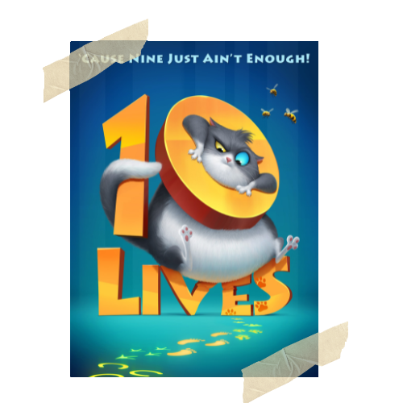

|  |
10 LIVESWhen Dr Rose Everhart comes across a stray kitten on the road,she decides to take him home after taking him to an animal shelter. They soon develop a close bond but one day, Beckett's comes precariously close to losing his ninth life. CastMo Gilligan, Simone Ashley, Sophie Okonedo, Dylan Llewellyn Directed byChris Jenkins Music ByTom Howe, Geoff Zanelli |